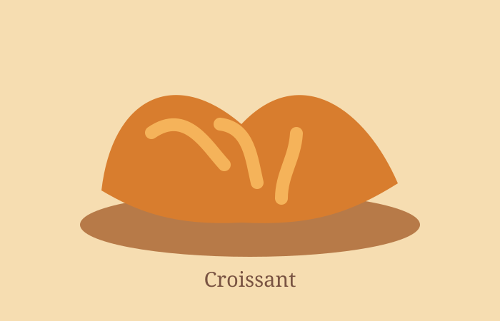

Escolhas do balcão
O nosso menu
Produtos simples, bem feitos e preparados diariamente na nossa cozinha.
Sugestão do dia
Leve um pouco da nossa fornada
Encomendas de pão e bolos podem ser feitas no balcão com antecedência.

Escolhas do balcão
Produtos simples, bem feitos e preparados diariamente na nossa cozinha.
Sugestão do dia
Encomendas de pão e bolos podem ser feitas no balcão com antecedência.
